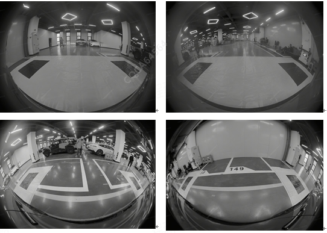
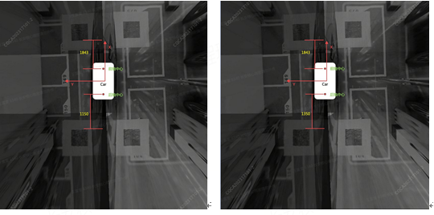

1. Выполнено Снятие или повторная установка любого узла камеры кругового обзора либо произошло столкновение в зонах переднего/заднего бамперов, зеркал заднего вида и т. д.;
2. Автомобиль попал в ДТП;
3. Появились коды неисправностей DTC, требующие повторной калибровки (например, B193C0C: AVM не откалиброван OK);
4. Снизилась производительность узла камеры кругового обзора (например, аномальное расстояние обнаружения целей или аномальное отображение изображения и т. д.);
5. Из-за внешних или иных воздействий узел камеры кругового обзора закреплен ненадежно или его положение нарушено.
6. Заменен центральный компьютер.
Если на автомобиле выполнялись операции по снятию переднего и заднего бамперов либо повторной установке и демонтажу камер кругового обзора, необходимо заново откалибровать камеры кругового обзора в соответствии с процедурой послепродажной калибровки.
Диагностический прибор
1. По возможности выбирайте просторное помещение в закрытом пространстве без препятствий вокруг и избегайте мест с сильным освещением. Как показано на рисунке ниже:

На рисунке выше имеется достаточно пространства для ровного расстилания черного клетчатого тента, причем вокруг отсутствуют преграды.
Установите автомобиль прямо и неподвижно. Измерьте расстояния с помощью рулетки и расстелите тент в соответствии с расстояниями, показанными на рисунке ниже:

Операция по укладке тента заключается в совмещении центра переднего тента с центром передней оси автомобиля и перемещении его вперед вдоль оси X таким образом, чтобы расстояние по оси X между черными блоками на тенте и центром передней оси составляло 1843 mm. Центр заднего тента совмещается с центром задней оси автомобиля и перемещается назад вдоль отрицательного направления оси X таким образом, чтобы расстояние по оси X между черными блоками на тенте и центром задней оси составляло 1150 mm. Указанные расстояния не требуют миллиметровой точности, достаточно примерного соответствия.